class: center, middle # Getting Started with Local Models (Gemma 4, Llama, and More) ## Lucas Soares ### October 2026 --- # Methodology Notes -- 1. Presentation Block -- 2. Notebook Demo -- 3. Quick Q&A + Summary -- 4. Optional Exercise During Q&A -- 5. Repeat --- # LLMs Predict the Next Word <p>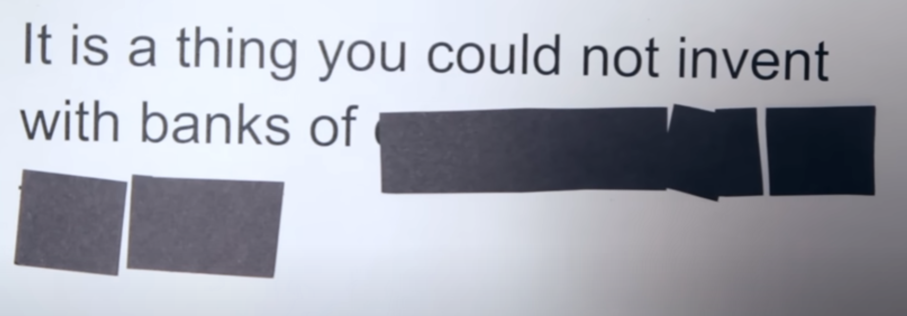</p> --- # LLMs Predict the Next Word <p>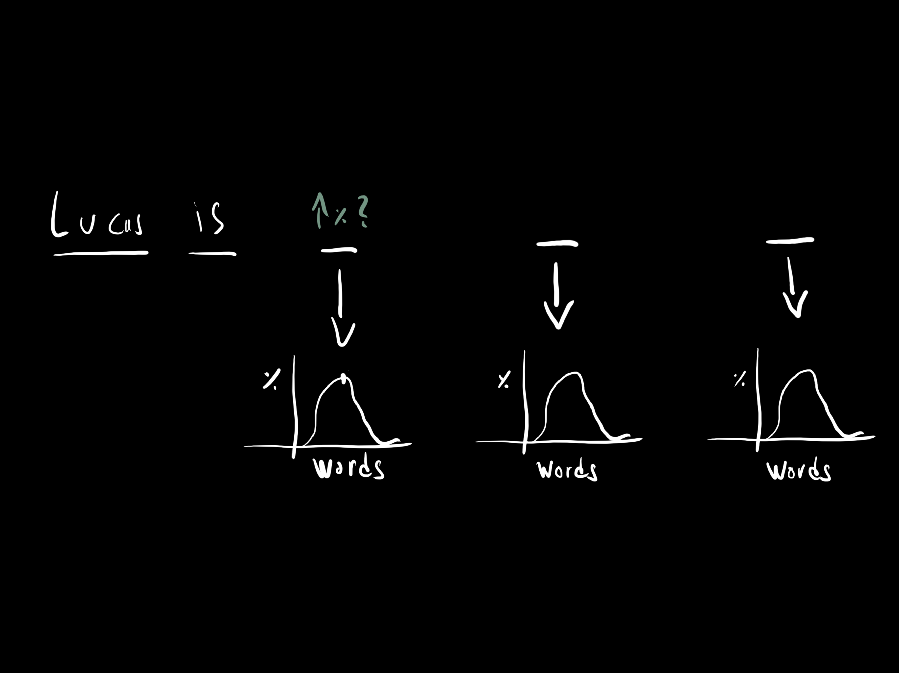</p> --- # LLMs Predict the Next Word <p>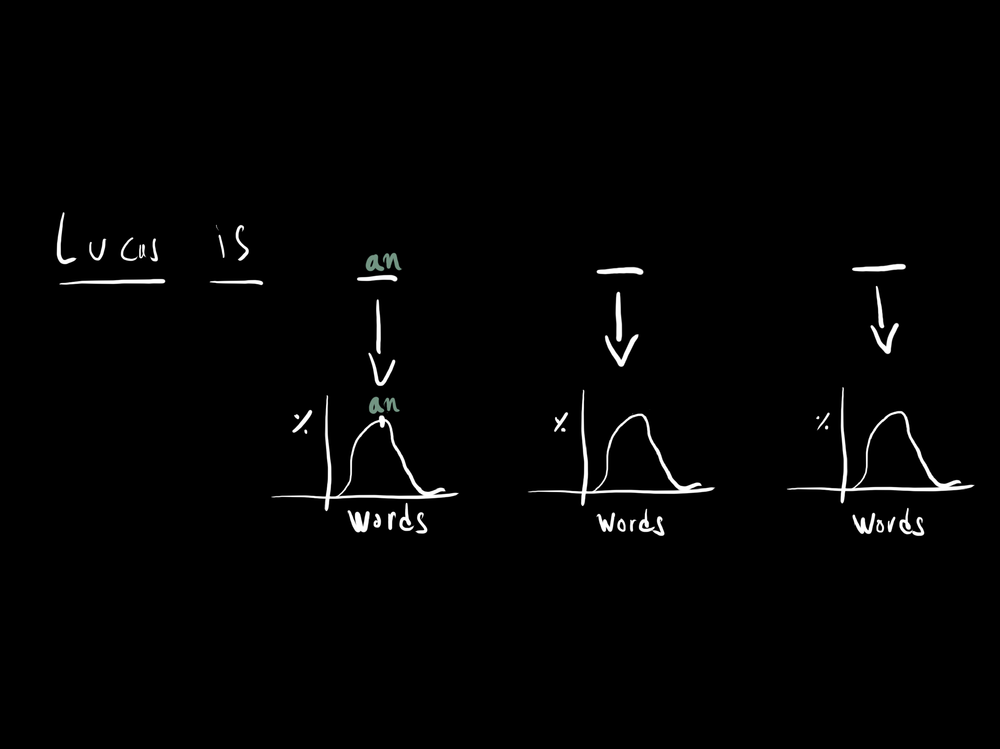</p> --- # LLMs Predict the Next Word <p>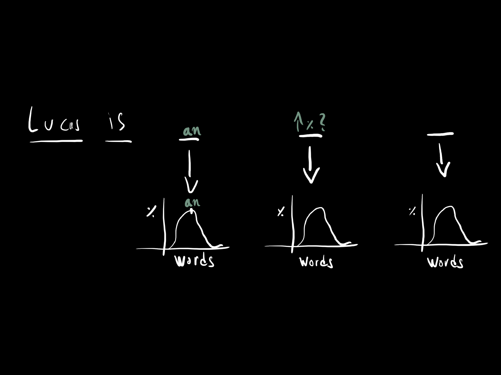</p> --- # LLMs Predict the Next Word <p>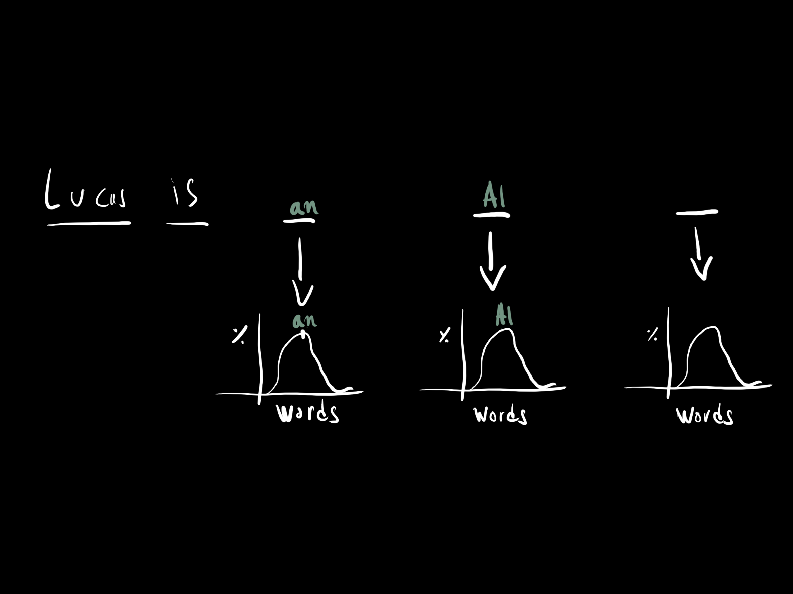</p> --- # LLMs Predict the Next Word <p>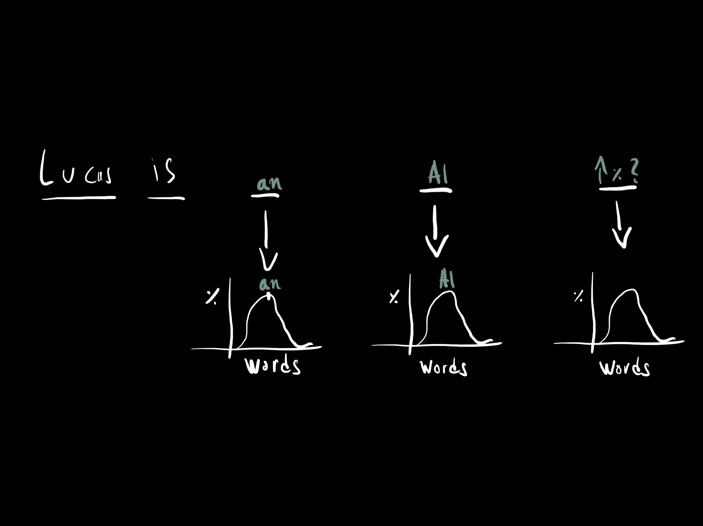</p> --- # LLMs Predict the Next Word <p>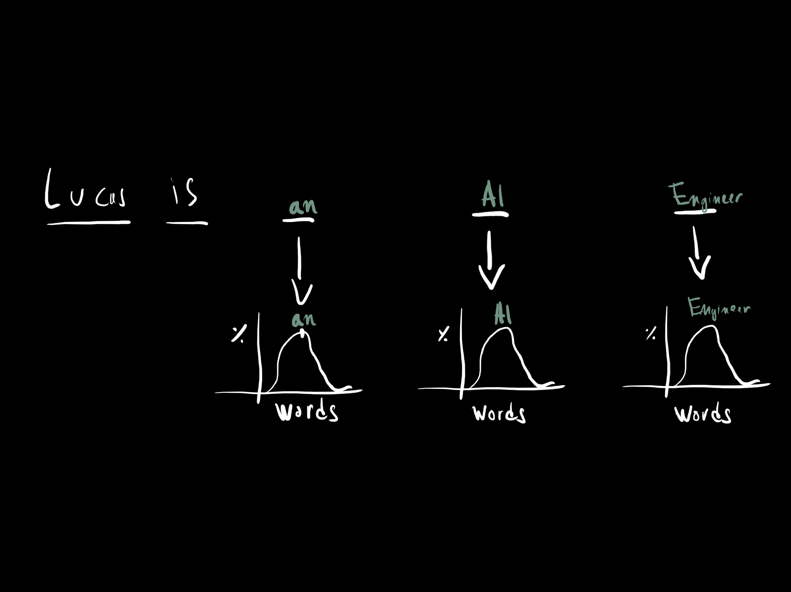</p> --- # LLMs Predict the Next Word <p>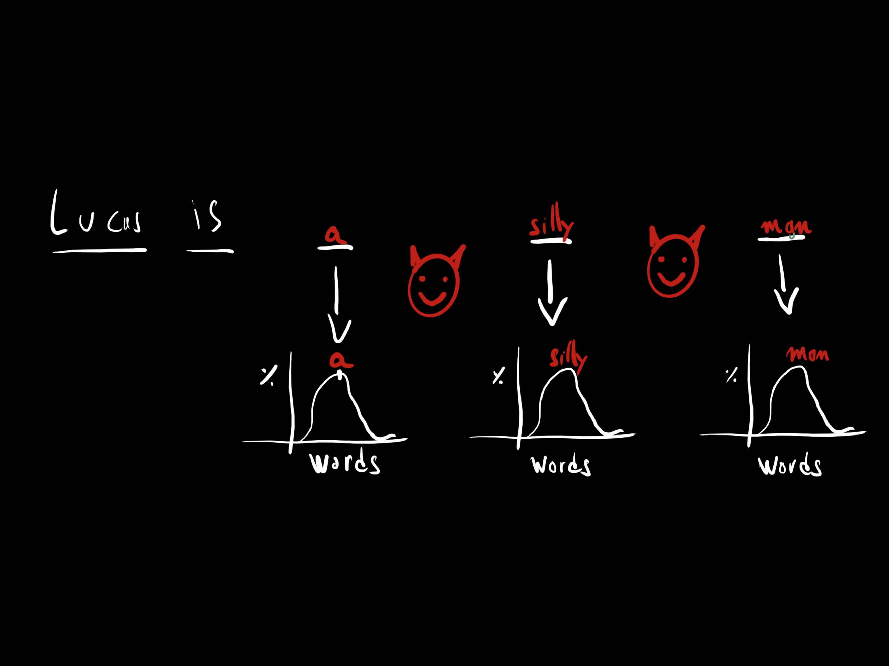</p> --- <p>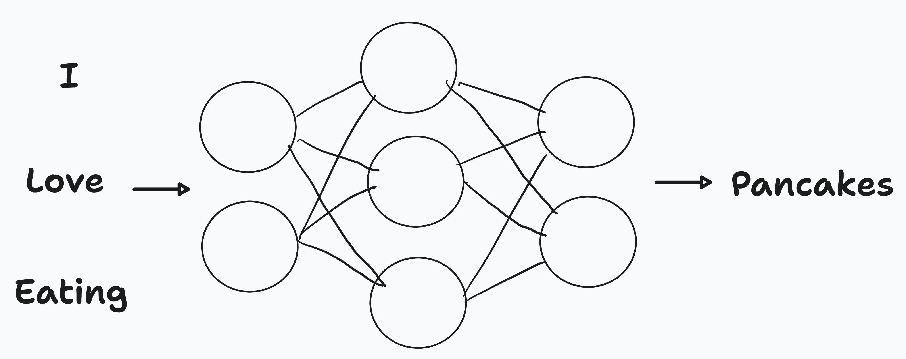</p> --- <p>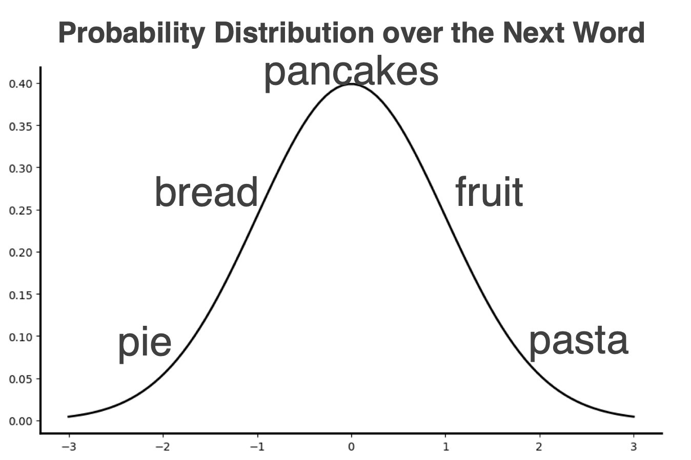</p> --- # Open Models: How We Got Here | Date | Model | Why It Mattered | |------|-------|-----------------| | Apr 2024 | Llama 3 | Open weights with a commercial license | | Dec 2024 | Llama 3.3 70B | Best open coding model of its generation | | Jan 2025 | DeepSeek-R1 | Frontier-level reasoning, MIT license | | Apr 2025 | Llama 4 / Qwen 3 | MoE architectures go mainstream | | **Apr 2026** | **Gemma 4** | **All compute tiers · multimodal · Apache 2.0** | | Aug 2026 | Qwen 3.8 27B | Dense 27B, single 24 GB GPU, Apache 2.0 — local coding/agent pick | -- → Gemma 4 is the **course default** from this session forward. --- # The 2026 Local Model Lineup | Model | RAM / VRAM | Best For | License | |-------|-----------|----------|---------| | **Gemma 4 12B** | 16 GB laptop / unified memory | Text + image + audio* | Apache 2.0 | | **Gemma 4 26B (MoE)** | ~18 GB VRAM (19 GB download) | General + multimodal | Apache 2.0 | | **Gemma 4 31B (dense)** | 20 GB VRAM | Flagship Gemma 4: general + multimodal | Apache 2.0 | | **Qwen 3.8 27B** | 18 GB VRAM | Coding + agentic | Apache 2.0 | | **Llama 3.3 70B** | 43 GB VRAM | Coding, instruction | Llama Community | | **DeepSeek-R1 32B** | 20 GB VRAM | Math + chain-of-thought | MIT | | **Phi-4 14B** | 9 GB VRAM | Reasoning, STEM, small GPU | MIT | | **Qwen3 4B** | CPU only | General, fast, multilingual | Apache 2.0 | <p style="font-size: 14px; margin-top: 20px;"> Source: Ollama library, September 2026 · *audio via HF Transformers, not Ollama </p> --- # Why Gemma 4 is the New Default for This Course -- - **All compute tiers** — E2B/E4B run CPU-only; 12B fits 16 GB laptops; 26B MoE / 31B for 24 GB GPUs -- - **Multimodal by default** — image input on every size; audio on E2B, E4B and 12B (via HF Transformers, not Ollama) -- - **Clean commercial license** — Apache 2.0; no MAU caps, no EU restrictions, no license anxiety -- - **Quality** — strong for its size -- - **Active development** — Google iterating fast; first-class Ollama integration -- ```bash ollama pull gemma4:26b # 24 GB GPU ollama pull gemma4:12b # 16 GB laptop ollama pull gemma4:e4b # CPU-only ``` --- class: center, middle <h1> <span style="background-color: lightgreen"> Whiteboard - Local LLMs Offering + Tooling Breakdown </span> </h1> --- class: center,middle # Q&A / Break --- class: center,middle <h1> <span style="background-color: lightgreen"> Notebook Demo - Introduction to Using Local Models Easily with Ollama </span> </h1> --- class: center,middle # Q&A / Break --- # Query Your Docs Locally with Local LLMs - Need for LLMs with access to context-relevant data. <img src="../notebooks/assets-resources/private-qa-gemma4.png" width="70%" style="margin-left: 30pt;"> --- # Query Your Docs Locally with Local LLMs - Privacy concern with closed source LLMs. <img src="../notebooks/assets-resources/cloud-llm-privacy-risk.png" width="70%" style="margin-left: 30pt;"> --- # Query Your Docs Locally with Local LLMs - Solution? Local LLMs! (like Gemma 4!) <img src="../notebooks/assets-resources/local-llm-solution-gemma4.png" width="70%" style="margin-left: 30pt;"> --- # RAG with Gemma 4 - RAG - Retrieval Augmented Generation <p>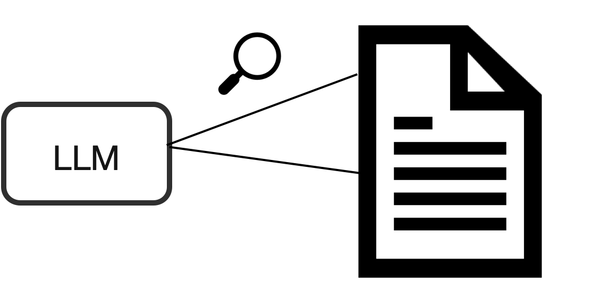</p> --- # RAG with Gemma 4 <p>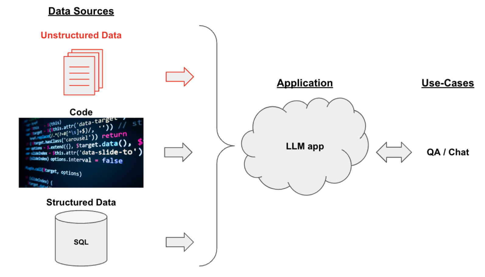</p> --- <p>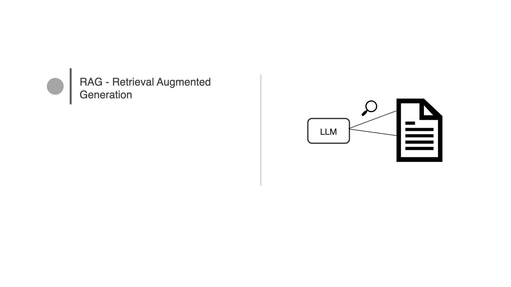</p> <p style="font-size: 14px; margin-top:20pt;"> <a href='https://docs.langchain.com/oss/python/langchain/knowledge-base'>Langchain Docs</a> </p> --- <p>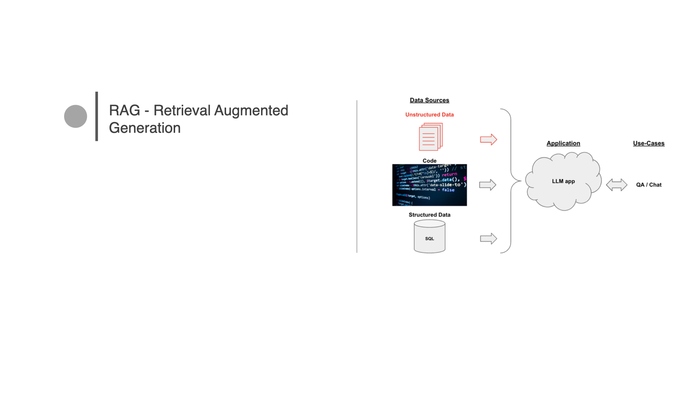</p> <p style="font-size: 14px; margin-top:20pt;"> <a href='https://docs.langchain.com/oss/python/langchain/knowledge-base'>Langchain Docs</a> </p> --- <p>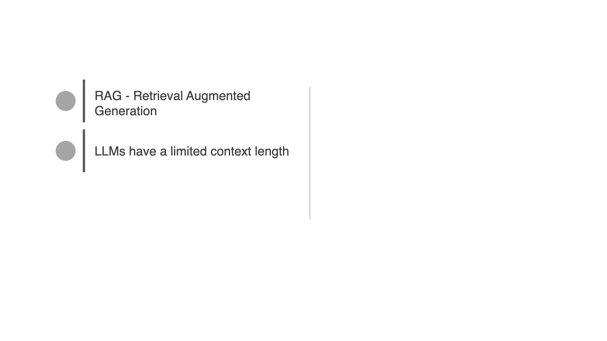</p> <p style="font-size: 14px; margin-top:20pt;"> <a href='https://docs.langchain.com/oss/python/langchain/knowledge-base'>Langchain Docs</a> </p> --- <p>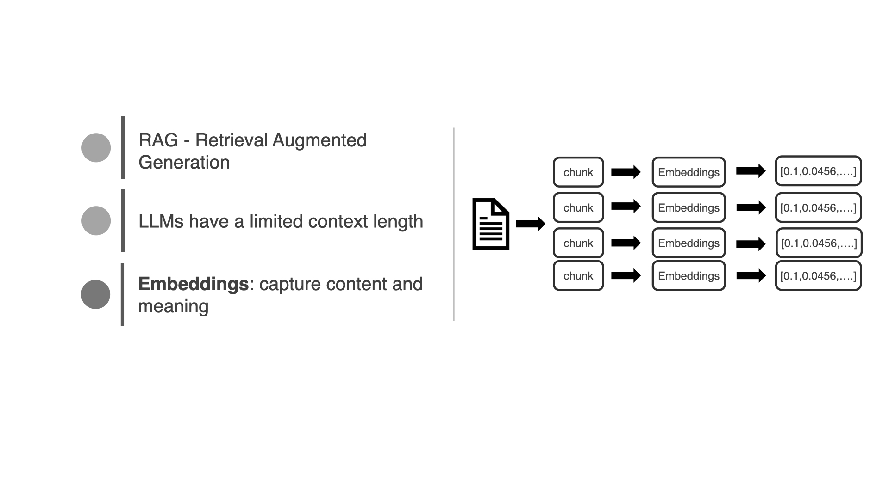</p> <p style="font-size: 14px; margin-top:20pt;"> <a href='https://docs.langchain.com/oss/python/langchain/knowledge-base'>Langchain Docs</a> </p> --- <p>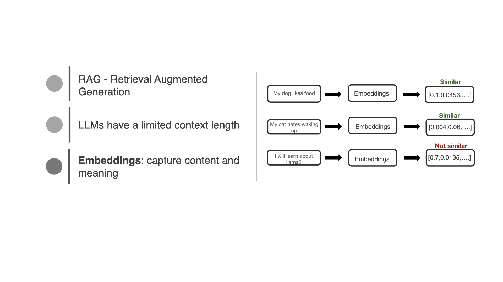</p> <p style="font-size: 14px; margin-top:20pt;"> <a href='https://docs.langchain.com/oss/python/langchain/knowledge-base'>Langchain Docs</a> </p> --- <p>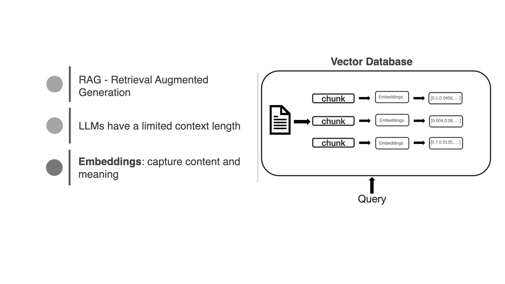</p> <p style="font-size: 14px; margin-top:20pt;"> <a href='https://docs.langchain.com/oss/python/langchain/knowledge-base'>Langchain Docs</a> </p> --- <p>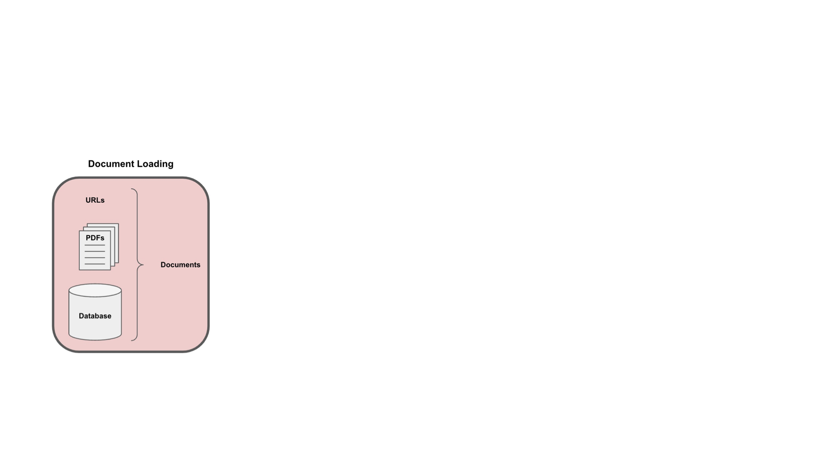</p> --- <p>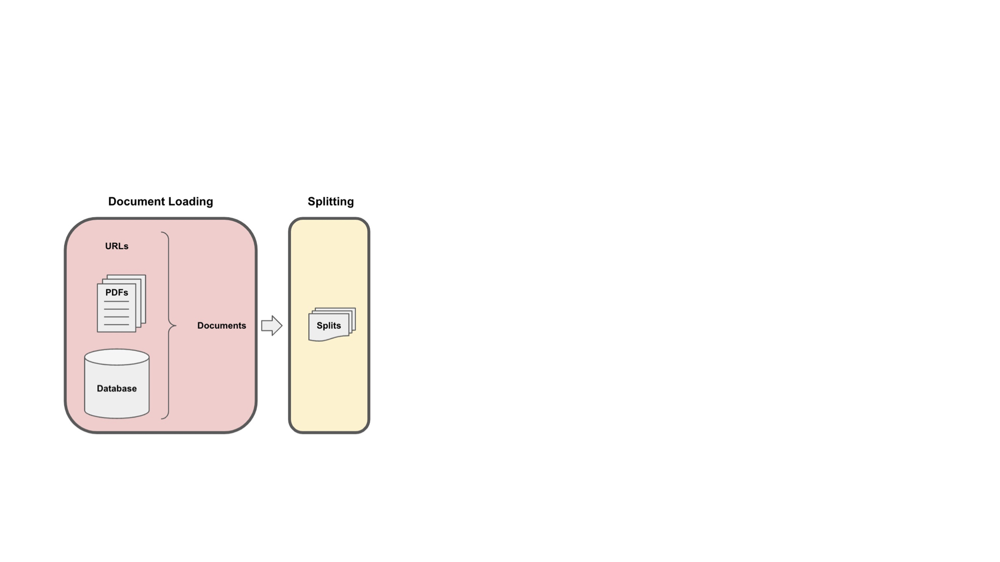</p> --- <p>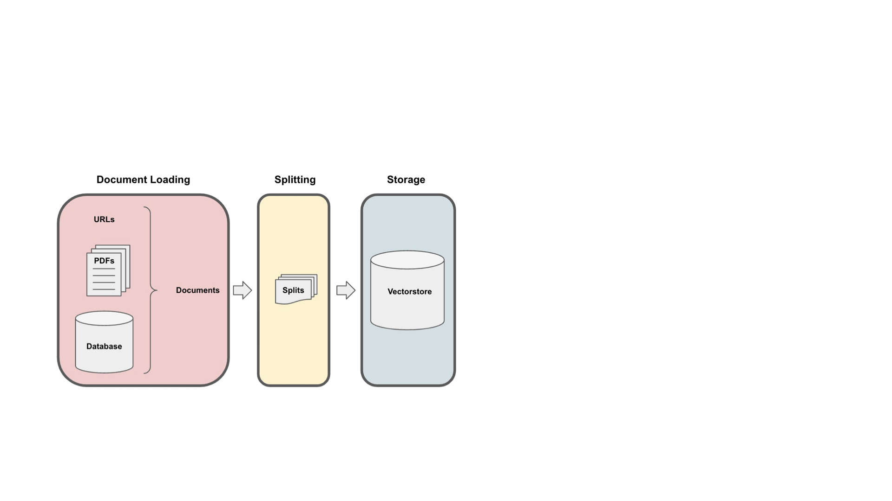</p> --- <p>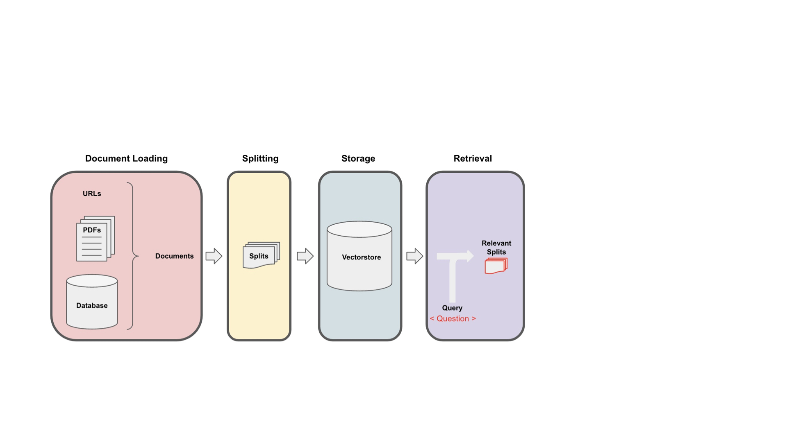</p> --- <p>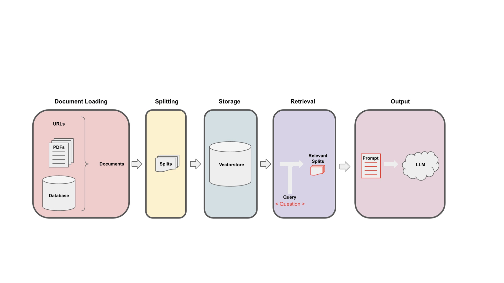</p> --- --- class: center, middle <h1> <span style="background-color: lightgreen"> Notebook Demo - Local RAG with Gemma 4 </span> </h1> --- class: center, middle # Q&A / Break --- # Local Agents in 2026 -- **What is a local agent?** -- - An **LLM** that receives observations and decides what to do next -- - A **tool loop** — the model calls functions (search, file ops, APIs, code execution) -- - **Memory** — short-term (context window) + long-term (vector store / notes) -- <p>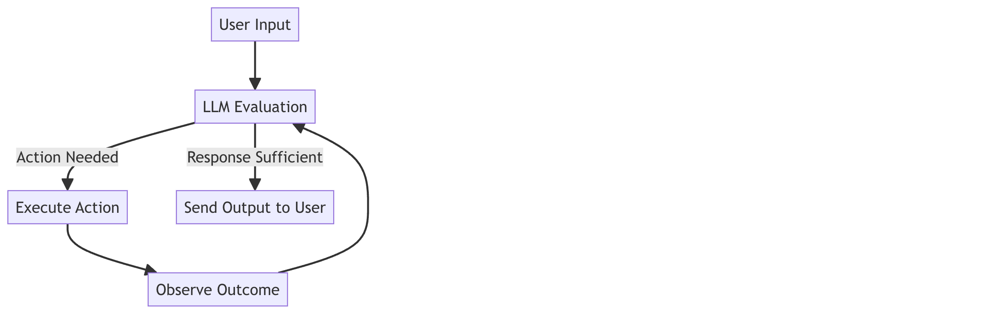</p> <p class="footnote"> <a href='https://blog.langchain.dev/openais-bet-on-a-cognitive-architecture/'>Explanation of the agent loop in cognitive architectures.</a> </p> --- # Small Language Models for Local Agents -- - SLMs (1B–14B) are now strong enough for **narrow, bounded agentic tasks** -- - Classification, extraction, tool routing, short summarization → SLMs handle these well -- - SLMs fail on: multi-step reasoning chains, ambiguous planning, cross-document synthesis -- - **Rule of thumb:** use local SLMs for bounded execution; route to larger/cloud models for open-ended judgment -- - The right architecture: **local model + retrieval + tools + eval set + fallback router** <p style="font-size: 14px; margin-top: 20px;"> <a href='https://arxiv.org/pdf/2506.02153'>SLMs for Agentic Tasks — arXiv 2506.02153</a> </p> --- # Hermes Agent — Full Local Agent Workbench <img src="../notebooks/assets-resources/hermes-agent-ui.png" style="width: 30%; display: block; margin: 0 auto 8px auto;"> - Auto-detects any model running locally — no manual config per model -- - **Per-model tool parsers** — correct tool calling format for every model automatically -- - Bundled + self-generated skills — web search, file ops, calendar, notes, code -- - Persistent memory + autonomous multi-step tasks - One-command setup: `ollama launch hermes` <p style="font-size: 14px; margin-top: 5px;"> <a href='https://hermes-agent.nousresearch.com/'>hermes-agent.nousresearch.com</a> </p> --- # Vibe Checking Local Agents -- **The loop:** 1. Pick a small, realistic task from your use case -- 2. Run the agent on it with 2–3 local models -- 3. Score each output on 3 axes: - **Completion** — task done? (0 = no, 1 = partial, 2 = yes) - **Tool-use correctness** — right tool, right args? - **Hallucination** — grounded, or invented facts? -- 4. **Decide**: local vs. frontier - Local wins → use it; set up routing rule - Local fails → find the weak axis; route those cases to a stronger model -- > Build a 25-example vibe-check dataset. Score 2–3 models. Pick on evidence, not intuition. --- class: center, middle <h1> <span style="background-color: lightgreen"> Notebook Demo - Tool Calling/Structured Outputs and Local Agents </span> </h1> --- class: center, middle # Q&A / Break --- class: center, middle # Fine Tuning Gemma 4 --- class: center, middle <h1> <span style="background-color: lightgreen"> Whiteboard - Fine Tuning Gemma 4: what, when, why and beyond </span> </h1> --- # Fine Tuning Gemma 4 - <span style="color: red">What is fine-tuning?</span> -- - <span style="color: green">It's the process of training a smaller model on a specific task leveraging a domain-specific dataset.</span> -- - <span style="color: red">What does it do?</span> -- - <span style="color: green">Fine-tuning transfers the pre-trained model’s learned patterns and features to new tasks, improving performance and reducing training data needs.</span> -- - <span style="color: red">Why fine-tune?</span> -- - <span style="color: green">To improve the model's performance on a specific task.</span> -- - <span style="color: red">When to fine-tune?</span> --- <p>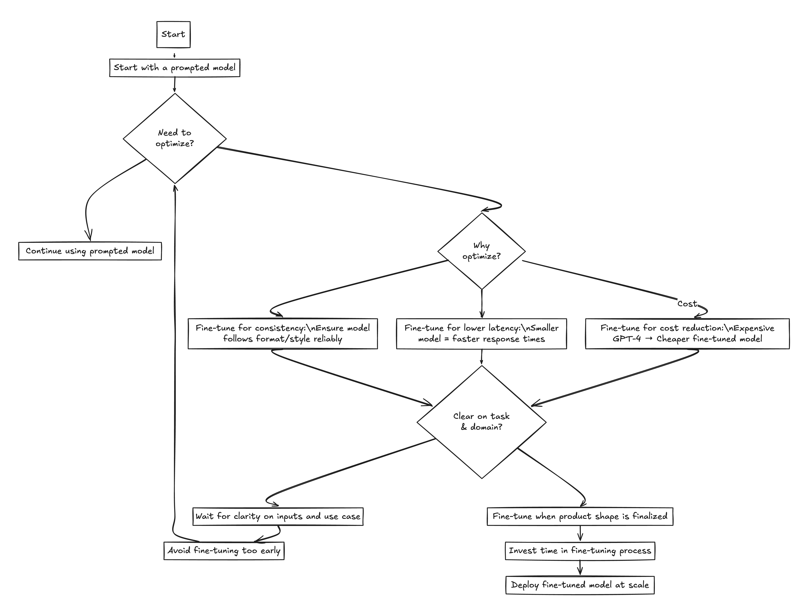</p> --- class: center, middle <h1> <span style="background-color: lightgreen"> Notebook Demo - Fine-Tuning Gemma 4 - Walkthrough </span> </h1> --- class: center, middle # Q&A / Break --- class: center, middle <h1> <span style="background-color: lightgreen"> Notebook Demo - End To End Example with Gemma 4 </span> </h1> --- # References **Gemma 4** 1. [Gemma 4 Model Card – Google DeepMind](https://ai.google.dev/gemma/docs/gemma4) 2. [Gemma 4 Fine-Tuning with Keras / JAX](https://ai.google.dev/gemma/docs/lora_tuning) 3. [Gemma 4 on Ollama](https://ollama.com/library/gemma4) **RAG & Embeddings** 4. [Structured Outputs with Ollama](https://ollama.com/blog/structured-outputs) 5. [Chunk Size Explanation](https://vectify.ai/blog/LargeDocumentSummarization?utm_source=substack&utm_medium=email) 6. [Embeddings + Parquet for Small Projects](https://minimaxir.com/2025/02/embeddings-parquet/) 7. [Text Chunking in RAG](https://www.youtube.com/watch?v=GYj4Ay7SdWw) --- # References (cont.) **Fine-Tuning** 8. [Fine Tuning Video](https://www.youtube.com/watch?v=-hYqt8M9u_M&t=604s) 9. [Generating Synthetic Data](https://eugeneyan.com/writing/synthetic/) 10. [High Quality Structured Report Generation Demo](https://youtu.be/E04rFNtwFcA?si=XM_nfu--7Tx41jvp) **Local LLMs & Agents** 11. [Awesome Local LLMs](https://github.com/vince-lam/awesome-local-llms) 12. [LLM-Driven Data Engineering](https://github.com/DataExpert-io/llm-driven-data-engineering) **Supplementary (Llama / historical)** 13. [Llama 3.3 Model Card](https://www.llama.com/docs/model-cards-and-prompt-formats/llama3_3/) 14. [Llama Cookbook – Finetuning](https://github.com/meta-llama/llama-cookbook/tree/main/getting-started/finetuning) 15. [Llama 3 Paper (arXiv)](https://arxiv.org/pdf/2408.13296) 16. [Embeddings + Llama by Simon Willison](https://simonwillison.net/2023/Oct/23/embeddings/#answering-questions-with-retrieval-augmented-generation)